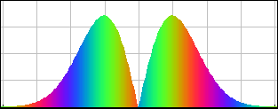
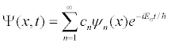
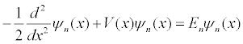

[Screen shot of an SHO superposition state that retains its shape.]
You can access the pre-set initial states for the infinite square well (ISW) and harmonic oscillator (SHO) via the textbox on the lower-left-hand side of the main simulation panel. These show:
- ISW Two State: Loads an ISW two-state superposition (equal mix of ground state and first-excited state).
- ISW Gaussian: Loads an ISW initial Gaussian wave packet with no initial average momentum.
- ISW Narrow Gaussian <p>0 = 0: Loads an ISW initial Gaussian wave packet with no initial average momentum.
- ISW Narrow Gaussian <p>0 = 80 π/a: Loads an ISW initial Gaussian wave packet with an initial average momentum.
- SHO Two State: Loads: Loads a SHO two-state superposition (equal mix of ground state and first-excited state).
- SHO Squeezed: Loads: Loads a SHO coherent state with an initial average momentum.
- SHO Squeezed Wide: Loads a SHO coherent state with an initial average momentum.
- SHO Boosted Coherent: Loads a SHO coherent state with an initial average momentum.
- SHO Boosted Squeezed: Loads a SHO squeezed state with an initial average momentum.
- SHO Shifted Ground State: Loads the SHO ground state with an initial shift from x = 0.
- SHO Shifted Excited State: Loads the SHO first-excited state with an initial shift from x = 0.
The fundamental building blocks of one-dimensional quantum mechanics are energy eigenfunctions ψn(x) and energy eigenvalues En. For a given potential energy function V(x) and boundary conditions, energy eigenfunctions can be determined either analytically or numerically. Most of the time in quantum mechanics these energy eigenfunctions are determined in position space. Once these energy eigenstates are determined, more interesting quantum-mechanical wave functions Ψ(x,t) can be studied by applying the superposition principle

where the expansion coefficients cn satisfy Σ |cn|2 = 1. Depending on how many of the coefficients cn are non-zero, one may have an energy eigenstate, a two-state superposition, or even an initially localized (usually Gaussian shaped) wave packet.
Any complete orthonormal set of eigenfunctions can be used to construct the wave function Ψ(x,t). This simulation uses the superposition principle to construct and display a time-dependent wave function using either infinite square well (ISW) or simple harmonic oscillator (SHO) eigenfunctions.
Although the metric (MKS) system of units has become the standard international system of units, it is not well suited for computation if the quantities being computed are very large or very small. Quantum phenomena occurs on the microscopic scale at very fast times and computations are usually done using an atomic system of units in which the reduced Plank's constant ħ, the Bohr radius ao, and the mass of the electron m are set equal to unity. The one-dimensional time independent Schrödinger equation in these units is:

In atomic units, one unit time is 2.42×10-17 seconds, one unit of distance is 5.29×10-11 meters, and one unit of energy is 4.36×10-18 Joules. This simulation models a particle with the mass of an electron using these atomic units.
The Eigenstate Superposition Demonstration simulation was created by Wolfgang Christian and the narrative was written by Wolfgang Christian and Mario Belloni.
The eigenstate superposition simulation was created using the Easy Java Simulations (EJS) modeling tool. You can examine and modify the model for this simulation if you have EJS installed by right-clicking within the wave function plot and selecting "Open Ejs Model" from the pop-up menu. Information about Ejs is available at: <http://www.um.es/fem/Ejs/> and in the OSP ComPADRE collection <http://www.compadre.org/OSP/>.